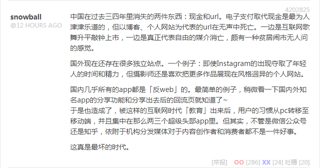
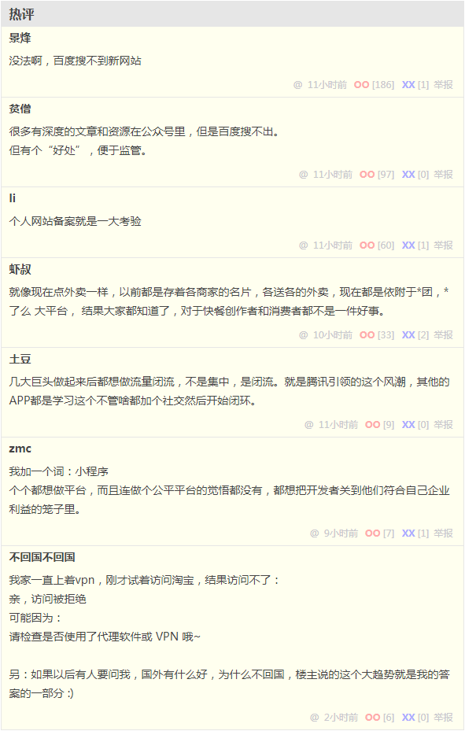
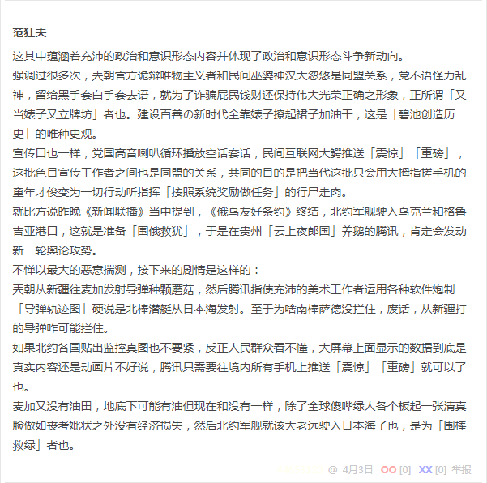

段子 4202825
中国在过去三四年里消失的两件东西：现金和url。电子支付取代现金是最为人津津乐道的，但以博客、个人网站为代表的url在无声中死亡。一边是互联网歌舞升平敲钟上市，一边是真正代表自由的媒介消亡，颇有一种贫居闹市无人问的感觉。
国外现在还存在很多独立站点。一个例子：即使Instagram的出现夺取了年轻人的时间和精力，但摄影师还是喜欢把更多作品展现在风格迥异的个人网站。
国内几乎所有的app都是「反web」的。最简单的例子，稍微看一下国内外知名app的分享功能和分享出去后的回流页就知道了~
于是也造成了，被这样的互联网时代「教育」出来后，用户的习惯从pc转移至移动端，并且集中在那么两三个超级头部app里。但其实，不管是微信公众号还是知乎，依附于机构分发媒体对于内容创作者和消费者都不是一件好事。
这真是最坏的时代。
没法啊，百度搜不到新网站
很多有深度的文章和资源在公众号里，但是百度搜不出。
但有个“好处”，便于监管。
个人网站备案就是一大考验
就像现在点外卖一样，以前都是存着各商家的名片，各送各的外卖，现在都是依附于美团饿了么大平台， 结果大家都知道了，对于快餐创作者和消费者都不是一件好事。
几大巨头做起来后都想做流量闭流，不是集中，是闭流。就是腾讯引领的这个风潮，其他的APP都是学习这个不管啥都加个社交然后开始闭环。
我加一个词：小程序
个个都想做平台，而且连做个公平平台的觉悟都没有，都想把开发者关到他们符合自己企业利益的笼子里。
我家一直上着vpn，刚才试着访问淘宝，结果访问不了：
亲，访问被拒绝
可能因为：
请检查是否使用了代理软件或 VPN 哦~
另：如果以后有人要问我，国外有什么好，为什么不回国，楼主说的这个大趋势就是我的答案的一部分 :)
这其中蕴涵着充沛的政治和意识形态内容并引领了激烈的政治和意识形态斗争新动向。
强调过很多次，兲朝官方诡辩唯物主义者和民间巫婆神汉大忽悠是同盟关系，党不语怪力乱神，留给黑手套白手套去语，就为了诈骗屁民钱财还保持伟大光荣正确之形象，正所谓「又当婊子又立牌坊」者也。建设百善の新时代全靠婊子撩起裙子加油干，这是「碧池创造历史」的唯种史观。
宣传口也一样，党国高音喇叭循环播放空话套话，民间互联网大鳄推送「震惊」「重磅」，这批色目宣传工作者之间也是同盟的关系，共同的目的是把当代这批只会用大拇指搓手机的童年才俊变为一切行动听指挥「按照系统奖励做任务」的行尸走肉。
就比方说昨晚《新闻联播》当中提到，《俄乌友好条约》终结，北约军舰驶入乌克兰和格鲁吉亚港口，这就是准备「围俄救犹」，于是在贵州「云上夜郎国」养鹅的腾讯，肯定会发动新一轮舆论攻势。
不惮以最大的恶意揣测，接下来的剧情是这样的：
兲朝从新疆往麦加发射导弹种颗蘑菇，然后腾讯指使充沛的美术工作者运用各种软件炮制「导弹轨迹图」硬说是北棒潜艇从日本海发射。至于为啥南棒萨德没拦住，废话，从新疆往中东打的导弹咋可能拦住。
如果北约各国贴出监控真图也不要紧，反正人民群众看不懂，大屏幕上面显示的数据到底是真实内容还是动画片不好说，腾讯只需要往境内所有手机上推送「震惊」「重磅」就可以了也。
麦加又没有油田，地底下可能有油但现在和没有一样，除了全球傻哔绿人各个板起一张清真脸做如丧考妣状之外没有经济损失，然后北约军舰就该大老远驶入日本海了也，是为「围棒救绿」者也。
补充
昨晚《新闻联播》还高调赞扬了交通大学西迁的核专家朱继洲，按照色目文艺爱好者不打自招的爆料，男主角朱元璋和女主角马大脚之间感情真挚配合默契。估计这次也类似，放话说「不惜放弃西安以东所有城市」也要和美帝灯塔国硬怼的朱成虎负责指挥从新疆往中东种蘑菇，而放话说「再充五万你会更强」的马化腾负责往兲朝境内手机上推送假新闻。
同时，擅长倒打一耙贼喊捉贼造谣污蔑栽赃陷害的山东曲阜「内孔C3
通古斯太君」色目公务员负责往北棒身上泼脏水，擅长在微博和微信客户端哗哗贴图发段子并转贴到九省通衢の煎蛋的色目宣传工作者负责炮制假新闻颠倒黑白混淆是非胡说八道胡搅蛮缠，擅长撒泼耍赖满地打滚经常叫嚣让谁连个屁都留不下的「普通网友」只管一切行动听指挥按照节奏添油加醋煽风点火挑拨离间。
顺便，无论什么内容，只要在网上消失了，再拿出来就不见得是原版了。也就是说，以「政治敏感」理由「亦当删去」的那些内容，就是个序列号占位符，将来主席台前三排玩脱了准备找替罪羊，兲朝狼牙棒在后台服务器修改数据安插一堆赛博朋克罪证，再使用兲朝特色互联网大鳄特供民族浏览器渲染出来打印一张，就是炮制冤假错案的所谓狗屁诡辩唯物主义证据。